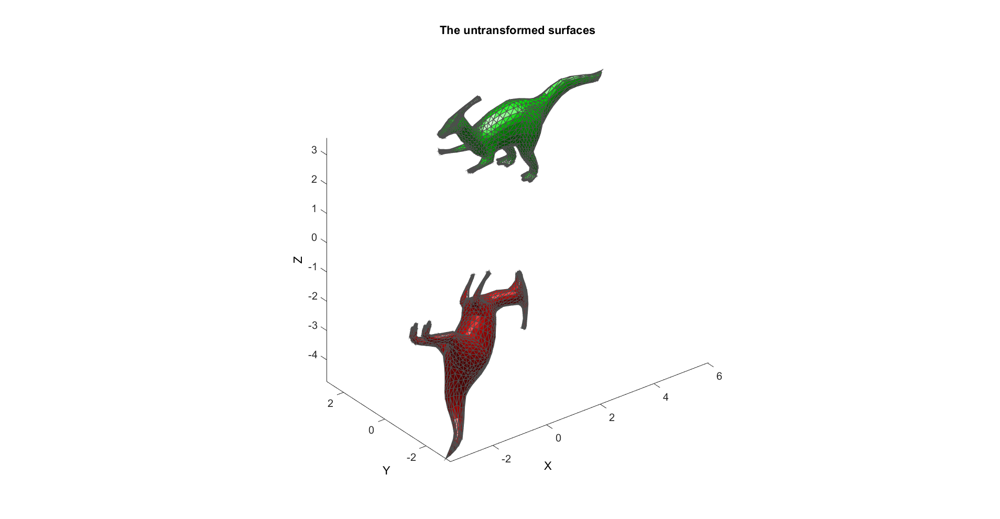
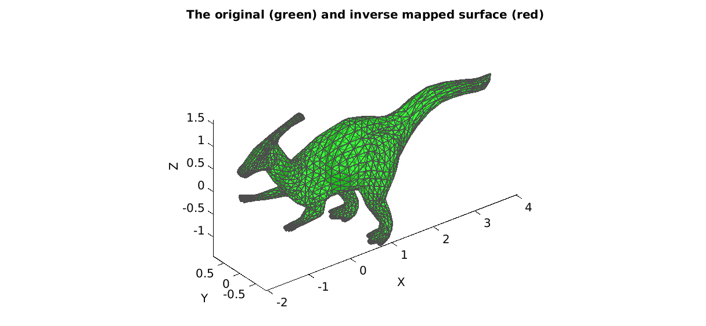

HELP_rigidTransformationMatrixDirect
Below is a demonstration of the features of the rigidTransformationMatrixDirect function
Contents
clear all; close all; clc;
Plot settings
fig_color='w'; fig_colordef='white'; fontSize=15; faceAlpha=1; edgeColor=0.3*ones(1,3); edgeWidth=1.5;
Load example patch data
[F,V1]=parasaurolophus;
Create a test tranformation matrix
%Define a rotation [R,~]=euler2DCM([0.25*pi 0.75*pi 0.1*pi]); %Build a tranformation matrix T=R; %Add translation T(:,4)=[-0.1 2.1 0.5]; T(4,:)=0; T(4,4)=1; %Transform VV=V1; VV(:,4)=1; VT=(T*VV')'; V2=VT(:,[1 2 3]);
Plotting data
hf=figuremax(fig_color,fig_colordef); title('The original (green) and transformed surface (red)','FontSize',fontSize); xlabel('X','FontSize',fontSize); ylabel('Y','FontSize',fontSize); zlabel('Z','FontSize',fontSize); hp=patch('Faces',F,'Vertices',V1,'FaceColor','g','FaceAlpha',faceAlpha,'lineWidth',edgeWidth,'edgeColor',edgeColor); hp=patch('Faces',F,'Vertices',V2,'FaceColor','r','FaceAlpha',faceAlpha,'lineWidth',edgeWidth,'edgeColor',edgeColor); camlight headlight; set(gca,'FontSize',fontSize); view(3); axis tight; axis equal; drawnow;
Get the transformation matrix for the point matched data using rigidTransformationMatrixDirect
[Tf]=rigidTransformationMatrixDirect(V1,V2); %Compare T and Tf disp(T); disp(Tf); %The residuals r=T-Tf; disp(r); %Inverse map coordinates V1f=(Tf\VT')'; V1f=V1f(:,[1 2 3]);
-0.6725 0.2185 0.7071 -0.1000
0.6940 0.5180 0.5000 2.1000
-0.2570 0.8270 -0.5000 0.5000
0 0 0 1.0000
-0.6725 0.2185 0.7071 -0.1000
0.6940 0.5180 0.5000 2.1000
-0.2570 0.8270 -0.5000 0.5000
-0.0000 -0.0000 0.0000 1.0000
1.0e-14 *
-0.0555 0.0167 0.0333 0
-0.0444 0.0444 -0.0111 -0.1332
-0.0444 0.1221 -0.0111 -0.0333
0.0038 0.0013 -0.0043 -0.0888
Plotting data
hf=figuremax(fig_color,fig_colordef); title('The original (green) and inverse mapped surface (red)','FontSize',fontSize); xlabel('X','FontSize',fontSize); ylabel('Y','FontSize',fontSize); zlabel('Z','FontSize',fontSize); hp=patch('Faces',F,'Vertices',V1,'FaceColor','g','FaceAlpha',0.5,'lineWidth',edgeWidth,'edgeColor',edgeColor); hp=patch('Faces',F,'Vertices',V1f,'FaceColor','r','FaceAlpha',0.5,'lineWidth',edgeWidth,'edgeColor',edgeColor); set(gca,'FontSize',fontSize); view(3); axis tight; axis equal; drawnow;

GIBBON
Kevin M. Moerman (kevinmoerman@hotmail.com)